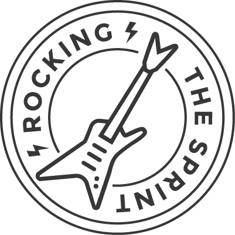

Acerca de mí
Hola, me llamo Patricia y soy Front-end developer. Me considero una persona perseverante, responsable y con entusiasmo por adquirir nuevos conocimientos; por lo que me adapto al cambio perfectamente. Creo que con perseverancia se pueden lograr las metas, que el trabajo en equipo es fundamental en cualquier ámbito y que el aprendizaje constante debe parte de la vida de toda persona.
Reconocimientos obtenidos - Laboratoria
